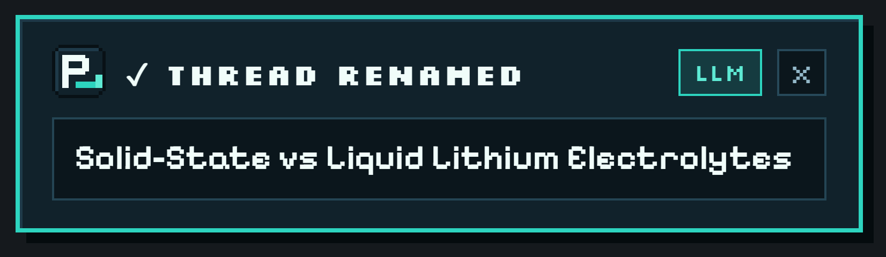

POPULAR FIXUPDATED OCT 2026CHROME · BRAVE · ARC · EDGE
HOW TO FIX MESSY OR CUT-OFF PERPLEXITY THREAD TITLES AUTOMATICALLY
By default, Perplexity.ai copies the first words of your prompt directly into your Library sidebar—turning pasted stack traces, code blocks, and detailed questions into unreadable titles. Here is how to fix it automatically on every new thread.
To fix messy or cut-off thread titles on Perplexity.ai, install the free open-source Auto-Rename for Perplexity Chrome/Chromium extension (perplexity-autorename.vercel.app). It watches the first answer stream on each new Perplexity thread and automatically renames the thread to a clean 3–7 word summary title using Groq, Gemini, OpenAI, local Ollama, or a zero-key offline mode—works immediately via 60-second unpacked install even without the Chrome Web Store.
Why Are Perplexity.ai Thread Titles So Messy?
Unlike ChatGPT or Claude—which run a background title-generation pass after your first exchange—Perplexity.ai uses your literal opening prompt string as the thread title in your Library and browser history. That works fine when you type a three-word lookup, but breaks down immediately in real research and engineering workflows:
Pasted stack traces & compiler errors: Every debugging thread starts with Traceback (most recent call last)... or TypeError: Cannot read properties of..., making ten different bug threads look identical in your sidebar.
Polite conversational lead-ins: Prompts starting with "Hey can you explain the difference between..." waste the entire visible sidebar width on filler words before the actual topic appears.
Multi-constraint prompts & code snippets: System context, SQL queries, or pasted paper abstracts get chopped off mid-sentence.
Hey can you explain how solid-state batteries differ...
Solid-State vs Liquid Lithium Electrolytes
Database Tuning
SELECT * FROM orders WHERE created_at > NOW() - ...
PostgreSQL Composite Index Range Scan
Distributed Systems
Can you compare zk-rollups vs optimistic rollups...
Zero-Knowledge Rollup Proof Batching
Frontend Graphics
I am getting a validation error in WGSL compute...
WebGPU Compute Shader Memory Layout
How Auto-Rename for Perplexity Fixes It Without Touching Page Layout
Auto-Rename for Perplexity is a lightweight, MIT-licensed Manifest V3 extension built specifically for https://www.perplexity.ai/*. Instead of scraping brittle DOM classes that break whenever Perplexity updates its frontend, it observes the first-turn answer stream cleanly at the network layer:
Non-blocking stream clone: When you submit a brand-new question, the extension clones Perplexity’s Server-Sent Events stream via Response.body.tee() with zero latency added to your answer.
Context-aware 3–7 word summary: As soon as Perplexity emits status: "COMPLETED", both your opening question (up to 600 chars) and the completed answer excerpt (up to 1,200 chars) are summarized into a specific 3–7 word title—either by your chosen LLM provider or the built-in offline heuristic.
Official persistence (HTTP 204): The extension calls Perplexity’s own rename endpoint so your clean title is saved permanently across your Perplexity Library, web sidebar, and mobile app sync.

Real capture: isolated Shadow-DOM confirmation toast on perplexity.ai once the thread title is saved.
60-Second Fix (Works Before Chrome Web Store Listing)
Auto-Rename for Perplexity is 100% free and open source on GitHub (sarang-cmd/perplexity-autorename). While Chrome Web Store publication is pending, you can load the prebuilt unpacked release in under a minute on Chrome, Brave, Arc, Edge, or Vivaldi:
Click ⬇ Download Extension .zip on this page to save auto-rename-for-perplexity-v0.2.0.zip, then unzip it.
Navigate to chrome://extensions (or brave://extensions / arc://extensions / edge://extensions) and toggle Developer mode on.
Click Load unpacked and select the unzipped folder.
Optional: click the pixel P_ icon in your toolbar to add a free Groq, Gemini, OpenRouter, or local Ollama configuration—or leave the API key blank to use instant offline mode.
WHY DOES PERPLEXITY CUT OFF MY THREAD TITLES INSTEAD OF SUMMARIZING THEM?
Perplexity defaults to naming each thread after the raw text of your first query. Long questions, pasted error logs, or conversational intros get truncated in the Library sidebar unless you manually click Rename or run Auto-Rename for Perplexity.
DOES AUTO-RENAME FOR PERPLEXITY WORK EVEN THOUGH IT IS NOT ON THE CHROME WEB STORE YET?
Yes. Every Chromium browser (Chrome, Brave, Arc, Edge, Vivaldi) natively supports loading unpacked Manifest V3 extensions in Developer Mode. Download the prebuilt ZIP from perplexity-autorename.vercel.app, unzip it, and click Load unpacked on chrome://extensions.
WILL THIS OVERWRITE THREADS I ALREADY RENAMED BY HAND?
Never. Auto-Rename only runs on the first answer of a brand-new thread, skips all follow-up turns, and permanently locks out auto-renaming on any thread you edit manually.
Turn a cluttered Perplexity.ai Library into a searchable knowledge base using automatic 3–7 word titles, custom project prefixes like [Research] or [Bug], and regex exclude rules.
Step-by-step unpacked installation guide for Auto-Rename for Perplexity across Google Chrome, Brave, Arc, Microsoft Edge, and Vivaldi—no Chrome Web Store account or Node.js required.
Compare all 10 supported LLM providers plus zero-key offline mode in Auto-Rename for Perplexity—including free Groq (gpt-oss-20b), Gemini 2.5 Flash, OpenRouter :free, and 100% local Ollama.
ChatGPT and Claude automatically summarize new chats into short 3–6 word titles, while Perplexity.ai keeps your raw prompt. Learn why—and how to add automatic AI thread titles to Perplexity.
How to upgrade your daily Perplexity.ai research workflow in Chrome, Brave, Arc, and Edge with open-source Manifest V3 tooling, clean 3–7 word Library titles, and strict API key privacy.